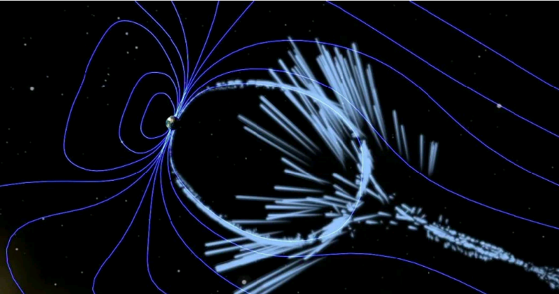

DEVELOPED BY ROBERT ZULU THE PROFESSIONAL PROGRAMMER

On Earth, we measure distance in inches or centimeters, yards or meters, miles or kilometers. But space is vast and distances between stars or galaxies are humongous. Scientists need something bigger to measure such distances.
Astronomers measure distances in light-years. Although "light-year" sounds like it measures time, it doesn't.
A light-year is the distance light travels in one year.
OR
A light-year is unit of distance. It is the distance that light
can travel in one year. Light moves at a velocity of about 300,000 kilomerters (km) each second.
So in one year, it can travel about 10 trillion km. More p recisely, one light-year is equal to
9,500,000,000,000 kilometers.
What is the nearest star to Earth? Our sun is the nearest star. It is about 150,000,000 km away. The next closest star to Earth is Proxima Centauri. Proxima Centauri is 40 trillion (40,000,000,000,000) kilometers from Earth. Such a large number is difficult to understand and use in calculations. For this reason, astronomers use a different unit of measurement when they talk about distances between stars. In one year, light travels 9.5 trillion km. If there were a star 9.5 trillion km from Earth, it would take one year for its light to reach us. By the time the star's light reached us, the light would be a year old. Looking at stars is a little like looking back in time. So how far away is Proxima Centauri in light-years? To find the answer, divide the distance from Earth to Proxima Centauri (40 trillion km) by the distance in one light year (9.5 trillion km) The answer is 4.2 light-years.